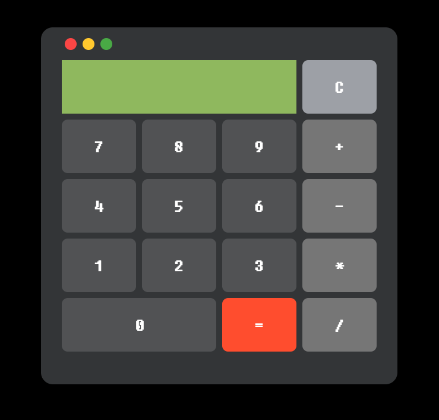
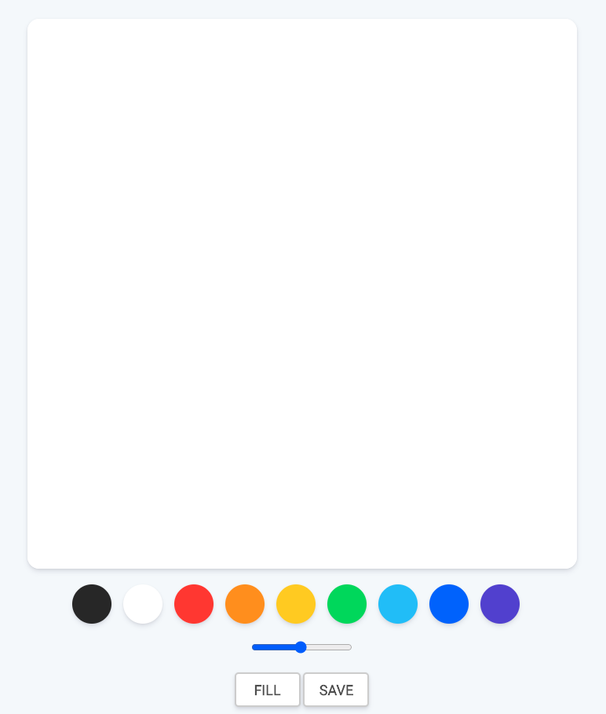

해양 수산부에서 선박 과적 차량 단속을 위하여 발주한
연구과제입니다. 개발언어는 C#이며, 하드웨어는 독일
Kistler사의 Counter, WIM 센서입니다. 개발한 프로그램은
차량이 하드웨어를 밟고 지나가면, 센서 값을 시리얼 통신으로
읽어온 후 시속 및 압력 값을 통해 무게값을 산출하고, DB에
저장합니다.
한국 철도공사에서 콘크리트 도상의 안정적인 유지보수를 위하여
발주한 연구과제입니다. 개발언어는 C#이며, 기반 데이터는 장당
4096 x 4096 이미지입니다. 균열 추정 프로그램은 이미지 파일를
기반으로 학습하고, 학습한 모델을 바탕으로 도상 균열을
추정하여 사용자에게 균열의 위치를 제공하며, 분석된 결과를
DB에 저장합니다. 균열 유지관리 프로그램은 분석된 결과를
DB에서 읽어온 후 사용자에게 필요한 정보들로 가공한 후 차트나
테이블 형태로 정보를 제공합니다.
한국 철도공사에서 물류 본부의 화물기지에 안전사고 예방을
위하여 발주한 연구과제입니다. 개발언어는 C#이며, 하드웨어는
CCTV 및 레이더 입니다. 해당 프로그램은 두가지 기능이 있는데,
객체감지와 거리감지입니다. 객체감지는 RTSP 영상을 기반으로
해당 ROI 영역에 사람의 형상이 있는지 없는지 추정하여 알림을
하는 기능이고, 거리감지는 열차 후부에 설치된 Radar로부터
신호 값을 읽어와 사용자에게 거리 값으로 변환하여 제공합니다.
Birdi 랜딩 페이지
개요
반응형으로 동작하는 Birdi 메인 페이지를 디자인 시안을 참고하여 퍼블리싱 하였습니다.
특징
✅ Media query를 활용하여 (PC/Mobile) 반응형 웹
구현
✅ FireBase 호스팅
활용 기술
HTML5CSS3FireBase
Hermoso 소개 페이지
개요
반응형으로 동작하는 Hermoso 메인 페이지를 템플릿을 활용하여 퍼블리싱 하였습니다.
특징
✅ Media query를 활용하여 (PC/Mobile) 반응형 웹
구현
✅ FireBase 호스팅
활용 기술
HTML5CSS3JavascriptFireBase
GitHub 메인 페이지
개요
반응형으로 동작하는 Github 메인 페이지를 클론코딩
하였습니다.
특징
✅ Media query를 활용하여 (PC/Tablet/Mobile) 반응형 웹
구현
✅ js toggle을 활용하여 HTML classList toggle
✅ Google Maps Api를 활용하여 지도 렌더링
✅ Grid 활용
활용 기술
HTML5CSS3Javascript
Youtube
개요
유튜브 페이지를 클론코딩 하였습니다.
특징
✅ flex 활용
✅ fontawesome 활용
활용 기술
HTML5CSS3
toDo 체크리스트
개요
TODO 리스트를 브라우저 로컬 저장소를 활용하여
구현하였습니다.
특징
✅ 로컬 저장소를 활용하여 이름 및 체크/완료 리스트 저장
삭제
✅ toggle을 활용하여 HTML classList toggle
✅ Unsplash Api를 활용하여 랜덤 배경화면 적용
✅ Google Maps Api를 활용하여 사용자 현재 위치 활용
✅ Open weather Map Api를 활용하여 날씨 정보 표시
✅ Media query를 활용하여 (PC/Mobile) 반응형 웹 구현
활용 기술
HTML5CSS3Javascript
계산기

그림판

카카오톡
개요
대화 보내기 및 대화 갯수 카운트가 가능한 카카오톡 페이지를 구현 하였습니다.
특징
✅ Media query를 활용하여 사용자 화면 크기 제한
✅ transition/animation을 활용하여 Splash 화면 구현
✅ 친구에게 대화 보내기 기능 구현
✅ 로컬 저장소를 활용하여 네비게이션바 채팅 갯수 카운트 및
친구와의 대화 내용 저장
활용 기술
HTML5CSS3Javascript
음악 플레이어
개요
음악 플레이어 웹페이지를 구현하였습니다.
특징
✅ transition/animation을 활용하여 좋아요 버튼 및 Now
Playing 구현
학부시절 졸업논문 및 졸업작품으로 개발한 안드로이드
앱입니다. 개발언어는 JAVA이며, 하드웨어는 아두이노 보드 및
GPS/BLE/WIFI모듈 입니다. 해당 프로그램은 아두이노 보드와
BLE모듈을 통하여 Beacon통신을 합니다. 1초 간격으로 통신하며
아두이노 보드의 거리 값을 계산하여 안드로이드 기기와
설정해놓은 거리값을 초과할때 팝업 및 알림음을 제공하여 미아
발생을 예방합니다.